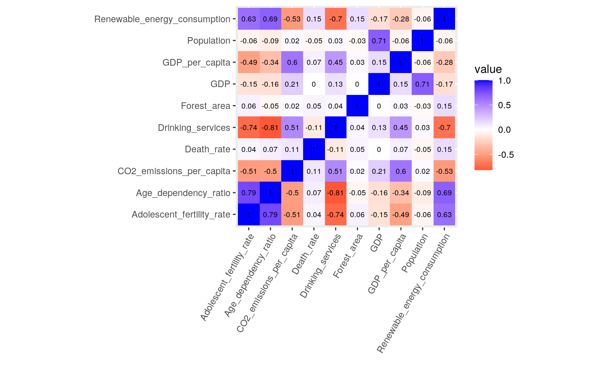
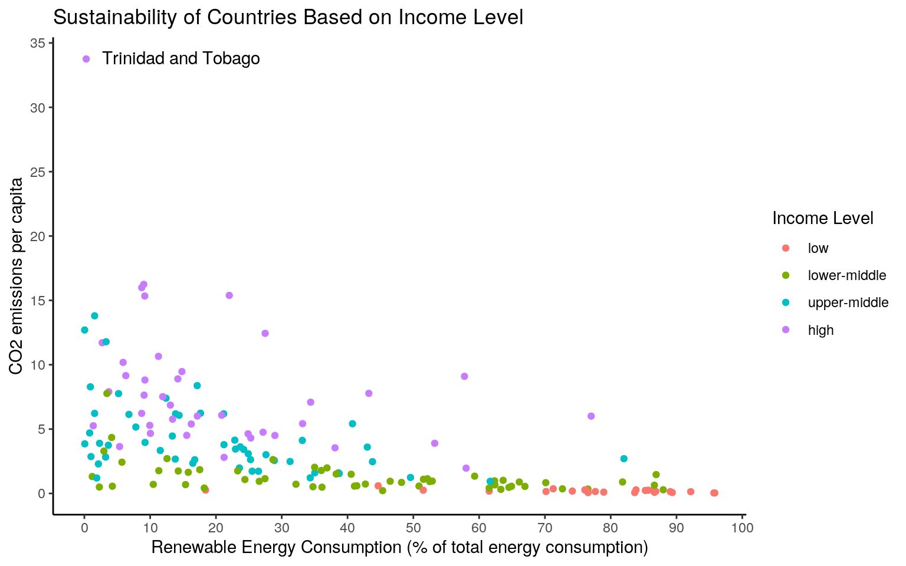
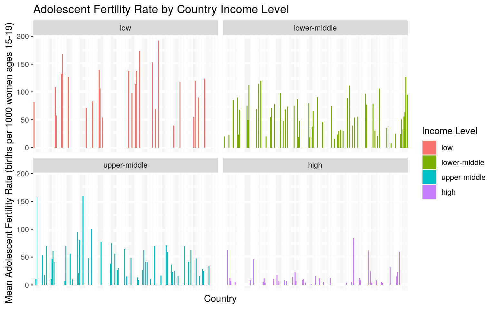
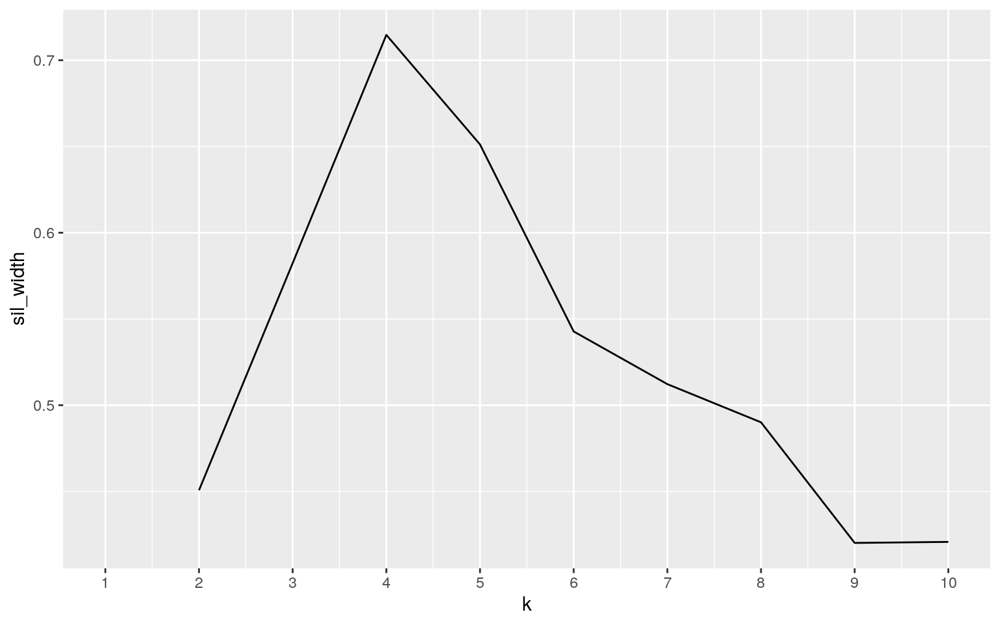
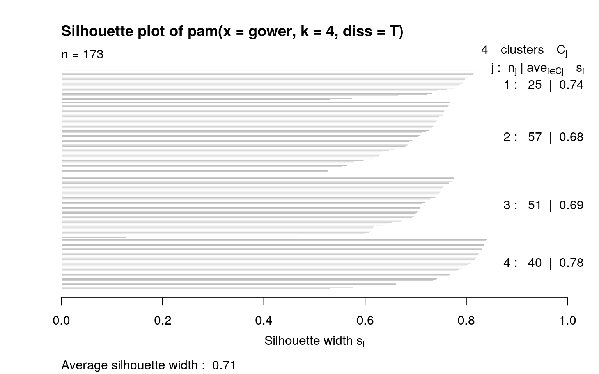
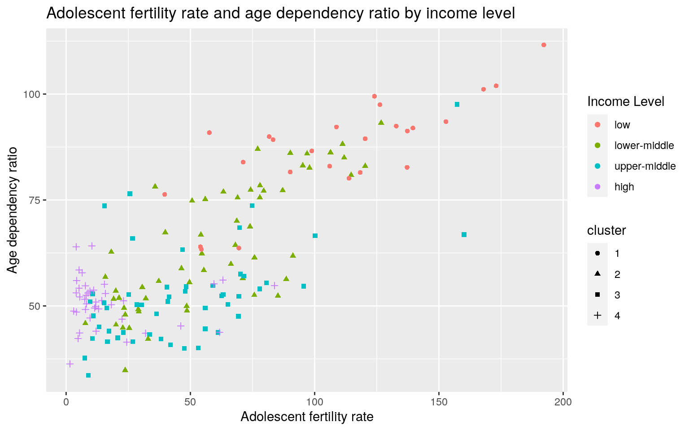

I found three datasets through the World Bank Databank, found here: https://databank.worldbank.org/home.aspx. Datasets can be filtered based on countries, statistics, and years. I chose statistics from Gender Statistics, Poverty Statistics, and Sustainable Development Goals, using the year 2015 as the base year for all three datasets. The Gender Statistics dataset contained these variables: GDP, Death rate, Adolescent fertility rate, and Age dependency ratio. The Poverty Statistics dataset contains the Population statistic, and the Sustainability Development Goals dataset contains CO2 emissions per capita, Forest area, Renewable resource consumption, and Access to drinking water services. I'm particularly interested in how a country's income level (based on GDP) impacts societal issues such as access to drinking water and adolescent fertility rate, as well as sustainability variables such as CO2 emissions and forest cover. I expect higher GDP to correlate to a higher standard of living (lower death rate, lower adolescent fertility rate, lower age dependency ratio, more access to drinking water services) and worse sustainability initiatives (such as higher CO2, less forest cover, but higher renewable resource consumption).
#loading libraries and importing datasets
country <- read.csv("Country Data.csv")
sustainability <- read.csv("Sustainability Stats.csv")
population <- read.csv("Population.csv")
library(dplyr)
#joining datasets
data <- inner_join(country, sustainability, by = "Country.Name")
data <- inner_join(data, population, by = "Country.Name")
#removing and renaming columns
colnames(data)## [1] "Time.x"
## [2] "Time.Code.x"
## [3] "Country.Name"
## [4] "Country.Code.x"
## [5] "GDP..current.US....NY.GDP.MKTP.CD."
## [6]
"Death.rate..crude..per.1.000.people...SP.DYN.CDRT.IN."
## [7]
"Adolescent.fertility.rate..births.per.1.000.women.ages.15.19...SP.ADO.TFRT."
## [8]
"Age.dependency.ratio....of.working.age.population...SP.POP.DPND."
## [9] "Time.y"
## [10] "Time.Code.y"
## [11] "Country.Code.y"
## [12]
"CO2.emissions..metric.tons.per.capita...EN.ATM.CO2E.PC."
## [13] "Forest.area....of.land.area...AG.LND.FRST.ZS."
## [14]
"Renewable.energy.consumption....of.total.final.energy.consumption...EG.FEC.RNEW.ZS."
## [15]
"People.using.at.least.basic.drinking.water.services....of.population...SH.H2O.BASW.ZS."
## [16] "Year"
## [17] "Year.Code"
## [18] "Country.Code"
## [19] "Population..total..SP.POP.TOTL."data <- data %>% select(-Time.x, -Time.Code.x, -Time.y, -Time.Code.y, -Country.Code.x, -Country.Code.y, -Year, -Year.Code, -Country.Code)
data <- data %>% rename(Country_Name = Country.Name, GDP = GDP..current.US....NY.GDP.MKTP.CD., Death_rate = Death.rate..crude..per.1.000.people...SP.DYN.CDRT.IN., Age_dependency_ratio = Age.dependency.ratio....of.working.age.population...SP.POP.DPND., Adolescent_fertility_rate = Adolescent.fertility.rate..births.per.1.000.women.ages.15.19...SP.ADO.TFRT., CO2_emissions_per_capita = CO2.emissions..metric.tons.per.capita...EN.ATM.CO2E.PC., Forest_area = Forest.area....of.land.area...AG.LND.FRST.ZS., Drinking_services = People.using.at.least.basic.drinking.water.services....of.population...SH.H2O.BASW.ZS., Renewable_energy_consumption = Renewable.energy.consumption....of.total.final.energy.consumption...EG.FEC.RNEW.ZS., Population = Population..total..SP.POP.TOTL.)
glimpse(data)## Rows: 309
## Columns: 10
## $ Country_Name <fct> "Afghanistan", "Albania",
"Algeria", "Angola", "Argentina", …
## $ GDP <dbl> 1.990711e+10, 1.138685e+10, 1.659794e+11,
1.161936e+11, 5.94…
## $ Death_rate <dbl> 6.929, 7.367, 4.715, 9.052, 7.638,
9.823, 6.600, 9.600, 5.70…
## $ Adolescent_fertility_rate <dbl> 81.6930, 20.0772,
10.6650, 157.2756, 63.0960, 22.8308, 11.94…
## $ Age_dependency_ratio <dbl> 89.95409, 45.55040,
52.83779, 97.56924, 56.10360, 44.83818, …
## $ CO2_emissions_per_capita <dbl> 0.26255571, 1.60264803,
3.85455658, 1.24024546, 4.66401075, …
## $ Forest_area <dbl> 2.0678246, 28.1569343, 0.8212483,
46.4073153, 9.9068583, 11.…
## $ Renewable_energy_consumption <dbl> 18.42347717,
38.61521047, 0.05895868, 49.56821033, 10.040077…
## $ Drinking_services <dbl> 61.54693, 91.00102, 93.47460,
54.31693, 99.07013, 99.73441, …
## $ Population <dbl> 34413603, 2880703, 39728025,
27884381, 43131966, 2925553, 23…#omitting NA values
data <- data %>% na.omit()I joined the datasets with an inner join, because I wanted data that appeared in all datasets, dropping all unmatched rows. In reality, regardless of what join I chose, the resulting dataset would have been the same, because all three datasets encompassed exactly 263 rows containing all the countries in the world based on the World Bank datasets. I dropped all rows related to time and year, because all data was drawn from the year 2015 and a column would be redundant. I also dropped country code, because that was redundant with country name. To clean up the resulting dataset, I dropped all rows that contained any "NA" values.
dplyr functions (filter, select, arrange, group_by, mutate, summarize) to manipulate and explore your dataset. For mutate, create a new variable that is a function of at least one other variable, preferably using a dplyr vector function (see dplyr cheatsheet). It's totally fine to use the _if, _at, _all versions of mutate/summarize instead (indeed, it is encouraged if you have lots of variables)#making new numeric variable
data <- data %>% mutate(GDP_per_capita = GDP/Population)
#making new categorical variable based on World Bank classifications
data <- data %>% mutate(Income_Level = case_when(GDP_per_capita > 12535 ~ "high", GDP_per_capita <= 12535 & 4045 <= GDP_per_capita ~ "upper-middle", GDP_per_capita <= 4045 & 1035 <= GDP_per_capita ~ "lower-middle", GDP_per_capita <= 1035 ~ "low"))
#reordering variables in dataset
data <- data %>% select(Country_Name, GDP, GDP_per_capita, Income_Level, Population, everything())
#examining variable using "filter", "select", "arrange"
data %>% filter(Income_Level == "high") %>% select(Country_Name, CO2_emissions_per_capita) %>% arrange(desc(CO2_emissions_per_capita))## Country_Name CO2_emissions_per_capita
## 1 Trinidad and Tobago 33.755085
## 2 Luxembourg 16.242584
## 3 United States 15.989866
## 4 Canada 15.388950
## 5 Australia 15.339784
## 6 Estonia 12.438853
## 7 Korea, Rep. 11.709398
## 8 High income 10.649120
## 9 Netherlands 10.182574
## 10 Czech Republic 9.468220
## 11 Japan 9.153641
## 12 Norway 9.099287
## 13 Germany 8.900419
## 14 Belgium 8.811836
## 15 Israel 7.900584
## 16 Finland 7.775642
## 17 Ireland 7.636664
## 18 Poland 7.520039
## 19 Austria 7.088592
## 20 Europe & Central Asia 6.865378
## 21 United Kingdom 6.220240
## 22 Slovenia 6.072184
## 23 Greece 6.012440
## 24 Iceland 6.007932
## 25 Slovak Republic 5.767759
## 26 Denmark 5.422286
## 27 Spain 5.393419
## 28 Cyprus 5.287371
## 29 Seychelles 5.259936
## 30 Portugal 4.755595
## 31 Argentina 4.664011
## 32 Chile 4.632586
## 33 Hungary 4.512673
## 34 Lithuania 4.504049
## 35 Switzerland 4.307036
## 36 Sweden 3.896324
## 37 Malta 3.641845
## 38 Latvia 3.543637
## 39 Panama 2.804430
## 40 Uruguay 1.963538I created a new variable for GDP per capita, which was calculated by dividing GDP by total population of each country. This variable is necessary to classify country based on income level (high, upper-middle, lower-middle, low). The cutoffs for each income level are based off of the World Bank classifications, which is the same source that the data was taken from. I reordered the columns in the dataset to increase clarity. I then filtered out high-income countries and sorted them by highest CO2 emitters per capita.
mean, sd, var, n, quantile, min, max, n_distinct, cor, etc) for each of your numeric variables both overall and after grouping by one of your categorical variables (either together or one-at-a-time; if you have two categorical variables, try to include at least one statistic based on a grouping of two categorical variables simultaneously). If you do not have any categorical variables, create one using mutate (e.g., with case_when or ifelse) to satisfy the group_by requirements above. Ideally, you will find a way to show these summary statistics in an easy-to-read table (e.g., by reshaping). (You might explore the kable package for making pretty tables!) If you have lots of numeric variables (e.g., 10+), or your categorical variables have too many categories, just pick a few (either numeric variables or categories of a categorical variable) and summarize based on those. It would be a good idea to show a correlation matrix for your numeric variables (you will need it to make one of your plots).#loading libraries
library(tidyr)
#reorder income level
data$Income_Level <- factor(data$Income_Level, levels = c("low", "lower-middle", "upper-middle", "high"))
#summary statistics for CO2 emissions, pivot longer
data %>% summarize(mean(CO2_emissions_per_capita), sd(CO2_emissions_per_capita), min(CO2_emissions_per_capita), max(CO2_emissions_per_capita), median(CO2_emissions_per_capita)) %>% pivot_longer(cols = c(1:5), names_to = "stat", values_to = "value")## # A tibble: 5 x 2
## stat value
## <chr> <dbl>
## 1 mean(CO2_emissions_per_capita) 3.60
## 2 sd(CO2_emissions_per_capita) 4.27
## 3 min(CO2_emissions_per_capita) 0.0372
## 4 max(CO2_emissions_per_capita) 33.8
## 5 median(CO2_emissions_per_capita) 2.29#CO2 emissions summary stats by income level
data %>% group_by(Income_Level) %>% summarize(mean(CO2_emissions_per_capita), sd(CO2_emissions_per_capita))## # A tibble: 4 x 3
## Income_Level `mean(CO2_emissions_per_capita)`
`sd(CO2_emissions_per_capita)`
## <fct> <dbl> <dbl>
## 1 low 0.193 0.121
## 2 lower-middle 1.26 1.19
## 3 upper-middle 4.30 2.86
## 4 high 8.16 5.53#summary statistics for adolescent fertility rate, pivot longer
data %>% summarize(mean(Adolescent_fertility_rate), sd(Adolescent_fertility_rate), min(Adolescent_fertility_rate), max(Adolescent_fertility_rate), median(Adolescent_fertility_rate)) %>% pivot_longer(cols = c(1:5), names_to = "stat", values_to = "value")## # A tibble: 5 x 2
## stat value
## <chr> <dbl>
## 1 mean(Adolescent_fertility_rate) 53.4
## 2 sd(Adolescent_fertility_rate) 41.8
## 3 min(Adolescent_fertility_rate) 1.53
## 4 max(Adolescent_fertility_rate) 192.
## 5 median(Adolescent_fertility_rate) 47.6#adolescent fertility rate summary stats by income level
data %>% group_by(Income_Level) %>% summarize(mean(Adolescent_fertility_rate), sd(Adolescent_fertility_rate))## # A tibble: 4 x 3
## Income_Level `mean(Adolescent_fertility_rate)`
`sd(Adolescent_fertility_rate)`
## <fct> <dbl> <dbl>
## 1 low 110. 40.1
## 2 lower-middle 59.9 31.4
## 3 upper-middle 47.0 33.3
## 4 high 17.1 19.2#correlation matrix
correlations <- data %>% select_if(is.numeric) %>% cor(use = "pair")I further investigated the variables "CO2 emissions per capita" and "Adolescent fertility rate" through summary statistics, including mean, standard deviation, minimum, maximum, and median. I looked at the summary statistics both overall and after grouping by income level. I then made a correlation matrix for my numeric variables.
#loading libraries
library(tidyverse)
#correlation heatmap of numeric variables
heatmap <- correlations %>% as.data.frame %>% rownames_to_column %>% pivot_longer(-1) %>% ggplot(aes(rowname, name, fill=value)) + geom_tile() + geom_text(aes(label=round(value,2)), size = 2.5) + xlab("") + ylab("") + coord_fixed() + scale_fill_gradient2(low="red", mid="white", high="blue")
#tilt x axis labels
heatmap + theme(axis.text.x = element_text(angle = 60, hjust = 1))  I made a correlation heatmap of my numeric variables, with a darker blue indicating a strong positive correlation and a darker red indicating a strong negative association. The strongest positive correlation is age dependency ratio and adolescent fertility rate, with a correlation of 0.79. The strongest negative correlation is age dependency ratio and drinking services, with a correlation of 0.81.
stat="summary". Each plot should include a supporting paragraph describing the relationships that are being visualized and any trends that are apparent. It is fine to include more, but limit yourself to 4. Plots should avoid being redundant! Four bad plots will get a lower grade than two good plots, all else being equal. Make them pretty! Use correct labels, etc.#scatterplot of renewable energy consumption and CO2 emissions by capita, grouped by income level
sustainabilityplot <- data %>% group_by(Income_Level) %>% ggplot(aes(Renewable_energy_consumption, CO2_emissions_per_capita)) + geom_point(aes(color = Income_Level)) + scale_x_continuous(breaks = seq(from = 0, to = 100, by = 10)) + scale_y_continuous(breaks = seq(from = 0, to = 35, by = 5)) + ggtitle("Sustainability of Countries Based on Income Level") + xlab("Renewable Energy Consumption (% of total energy consumption)") + ylab("CO2 emissions per capita") + labs(color = "Income Level") + theme_classic()
#label specific points
sustainabilityplot + geom_text(aes(label=ifelse(CO2_emissions_per_capita > 30,as.character(Country_Name),'')),hjust=-0.1,vjust=.4) There is a general correlation between higher renewable energy consumption (as a percentage of total energy consumption) and lower CO2 emissions per capita, which is to be expected. Income level also affects the CO2 emissions and renewable energy consumption of each country, with high and upper-middle income levels generally emitting more CO2 per capita and consuming less renewable energy as a percentage of their total energy consumption. Lower-middle and low income countries have a wide range of renewable energy consumption, but overall emit less CO2 per capita. I expected high income countries to consume more renewable energy as a total % of energy consumption, but found this to not be the case. I was curious which country was emitting the most CO2 per capita, because it looked like an outlier compared to the other countries, and found it to be Trinidad and Tobago.
#organize data and rename variables
summaryplot <- data %>% group_by(Income_Level, Country_Name) %>% summarize(Mean_adolescent_fertility = mean(Adolescent_fertility_rate), sd_adolescent_fertility = sd(Adolescent_fertility_rate), n = n(), se_adolescent_fertility = sd_adolescent_fertility/sqrt(n), Country = Country_Name)
#plot mean adolescent fertility rate by country and facet by income level
afr <- summaryplot %>% ggplot(aes(Country, Mean_adolescent_fertility)) + geom_bar(stat = "summary") + geom_errorbar(stat = "summary") + facet_wrap(~Income_Level)
#take out country names and add title/labels
afr2 <- afr + theme(axis.text.x=element_blank(), axis.ticks.x=element_blank()) + ggtitle("Adolescent Fertility Rate by Country Income Level") + ylab("Mean Adolescent Fertility Rate (births per 1000 women ages 15-19)") + xlab("Country")
#color by income level and change legend title
afr2 + aes(fill = Income_Level) + scale_fill_discrete(name = "Income Level") Based on these graphs, there is a notable difference in mean adolescent fertility rates across country income levels. Specifically, comparing high income countries and low income countries, high income countries have a general trend of lower mean adolescent fertility rates (as measured by the number of births per 1000 women aged 15-19) as compared to low income countries. The middle income countries (both lower-middle and upper-middle) do not have as clear differences in mean adolescent fertility rates, but generally falls in between the high income and low income countries. Due to the number of countries, error bars are not visible, so this is a potential source of error.
#load libraries
library(cluster)
library(GGally)
library(plotly)
#process data and incorporate categorical variables
pamtest <- data %>% mutate_if(is.character,as.factor) %>% column_to_rownames("Country_Name") %>%
select(Income_Level, Adolescent_fertility_rate, Age_dependency_ratio, CO2_emissions_per_capita) %>% mutate_at(2:4, as.numeric)
glimpse(pamtest)## Rows: 173
## Columns: 4
## $ Income_Level <fct> low, lower-middle, upper-middle,
upper-middle, high, lower-midd…
## $ Adolescent_fertility_rate <dbl> 81.6930, 20.0772,
10.6650, 157.2756, 63.0960, 22.8308, 11.9498,…
## $ Age_dependency_ratio <dbl> 89.95409, 45.55040,
52.83779, 97.56924, 56.10360, 44.83818, 50.…
## $ CO2_emissions_per_capita <dbl> 0.26255571, 1.60264803,
3.85455658, 1.24024546, 4.66401075, 1.6…#calculate gower dissimilarities
pamtest$Income_Level <- as.factor(pamtest$Income_Level)
gower <- daisy(pamtest, metric = "gower")
#for loop to determine ideal number of clusters
sil_width <- vector()
for(i in 2:10){
pam_fit <- pam(gower, diss = TRUE, k = i)
sil_width[i] <- pam_fit$silinfo$avg.width
}
ggplot()+geom_line(aes(x = 1:10, y=sil_width)) + scale_x_continuous(name="k", breaks = 1:10) I created a new dataset containing just four variables that I'm interested in analyzing further. Using gower dissimilarities, I ran a for loop with the silhouette method to determine the appropriate number of clusters to group my data. Based on the average silhouette widths as shown in the graph, the appropriate number of clusters is four.
# using gower dissimilarities and k = 4, perform clustering with PAM
test <- pam(gower, k = 4, diss = T)
#interpret average silhouette width
plot(test, which = 2) Data was clustered into four groups, also shown in the silhouette plot. The average silhouette width was 0.71, showing that a strong structure has been found.
#2D graph of three variables and clusters
cluster <- pamtest %>% mutate(cluster = as.factor(test$clustering))
cluster %>% ggplot(aes(Adolescent_fertility_rate, Age_dependency_ratio, color=Income_Level, shape = cluster)) + geom_point() + ggtitle("Adolescent fertility rate and age dependency ratio by income level") + xlab("Adolescent fertility rate") + ylab("Age dependency ratio") + labs(color = "Income Level") There appears to be a general correlation between higher adolescent fertility rate (measured by the number of births per 1000 women aged 15-19) and higher age dependency ratio (the ratio of dependents vs. the working aged population, with working age being defined ages 15-65 and dependents being outside that age range). Both these values increase for as income level decreases (i.e. high income countries have lower adolescent fertility rates and age dependency ratios than low income countries), and clusters appear to overlap exactly with country income level groups.
#3D graph of four variables and clusters
cluster %>% plot_ly(x = ~Adolescent_fertility_rate, y = ~Age_dependency_ratio, z = ~CO2_emissions_per_capita, color = ~cluster, colors = c("light green", "light blue", "thistle", "aquamarine"), symbol = ~Income_Level, symbols = c('circle','x','o', 'square'), type = "scatter3d", mode = "markers") %>%
layout(
title = "Adolescent fertility rate, Age dependency ratio, and CO2 emissions by Income Level",
scene = list(
xaxis = list(title = "Adolescent fertility rate (# births per 1000 women aged 15-19)"),
yaxis = list(title = "Age dependency ratio (ratio of dependents to working-age pop)"),
zaxis = list(title = "CO2 emissions (metric tons per capita)")))#interpret means for numeric variables by cluster
cluster %>% group_by(cluster) %>% summarize_if(is.numeric,mean,na.rm=T)## # A tibble: 4 x 4
## cluster Adolescent_fertility_rate Age_dependency_ratio
CO2_emissions_per_capita
## <fct> <dbl> <dbl> <dbl>
## 1 1 110. 87.2 0.193
## 2 2 59.9 64.4 1.26
## 3 3 47.0 52.5 4.30
## 4 4 17.1 50.9 8.16The means for adolescent fertility rate, age dependency ratio, and CO2 emissions per capita show a consistent upwards or downwards trend based on the cluster, which is associated with the income level of each country. Cluster 1 is low income, 2 is lower-middle, 3 is upper-middle, and 4 is high income. As income level increases (towards high income), adolescent fertility rate and age dependency ratio decrease, and CO2 emissions increase. Adolescent fertility rate in particular shows a significantly higher mean for low income countries as compared to the other three income levels.